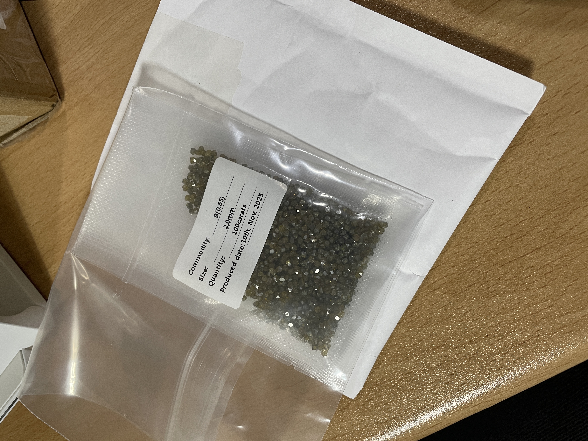

Lab-Grown Diamond RWA & Color-Enhancement NFT Framework on Cardano
✅ Updated Team Members and Roles (Final Version)
1. Sangyou Kim — Project Lead & Materials Science Researcher
Bachelor’s and Master’s degrees in Nuclear Engineering, and a Ph.D. in Electrical Engineering in Hanyang University, Seoul, Korea
Specialized in radiation–matter interaction, high-temperature material processing, and semiconductor-related experimental systems. Leads experimental design, heat/e-beam treatment execution, dataset analysis, NFT integration, and overall project management.
2. Woosang Jung — Patent Attorney (KIPO Registered)
Bachelor’s degrees in Material Engineering in Hanyang University, Seoul, Korea
Experienced patent attorney specializing in semiconductor processing, materials engineering, and advanced industrial technologies. Responsible for drafting and filing the provisional patent for the diamond color-enhancement method, managing IP strategy, and ensuring compliance with domestic and international patent requirements.
3. Professor Koo Min — Semiconductor Engineering, Daejeon University
Bachelor’s and Master’s degrees in Nuclear Engineering in Hanyang University, Seoul, Korea and a Ph.D. in Physics in Université Grenoble Alpes, France, Korea
Expert in semiconductor materials, lattice defects, and solid-state processing. Advises on experimental accuracy, scientific validation, and material characterization. Supports peer review of color-change results and contributes to the final research report.
4. Professor Seunghwa Yoo — Quantum Systems Engineering, Jeonbuk National University
Bachelor’s degrees in Nuclear Engineering in Hanyang University, Master’s and Ph.D degrees in Quantum Engineering in KAIST, Korea
(South Korea’s leading institution for beam-based material engineering) Specialized in electron-beam processing, quantum-scale defect control, and advanced material transformation techniques. Advises on e-beam treatment methodology, helps interpret irradiation results, and ensures scientific rigor in the enhancement process. Provides expert oversight on electron-beam dose modeling and defect-engineering mechanisms.
Feasibility
Team building
Value Enhancement and Advanced Industrial Application Research for Diamonds
- October 2025
Color-Transformation Research on Industrial Diamonds
Color-transformation research on industrial diamonds is important because it upgrades low-value diamonds into higher-value colored stones through controlled treatment. It also provides essential data on how diamond defects and color centers behave, supporting future applications in jewelry, electronics, sensors, and other advanced industries.
November 2025 - December 2025
